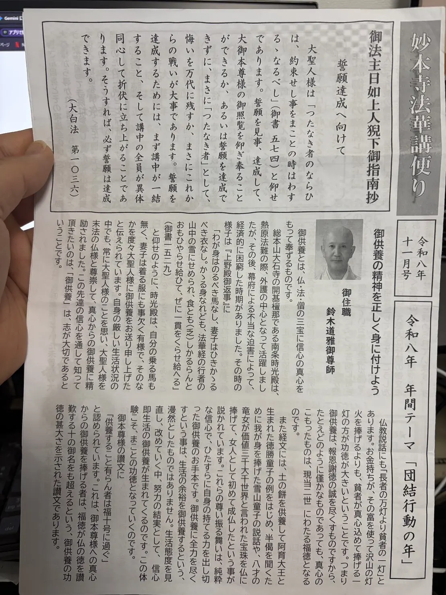
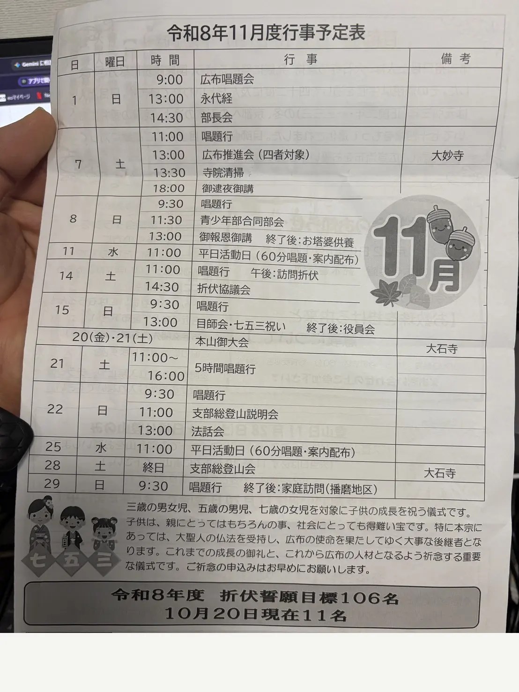
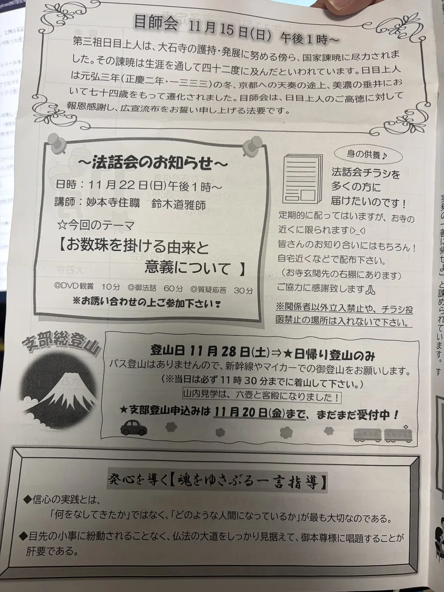
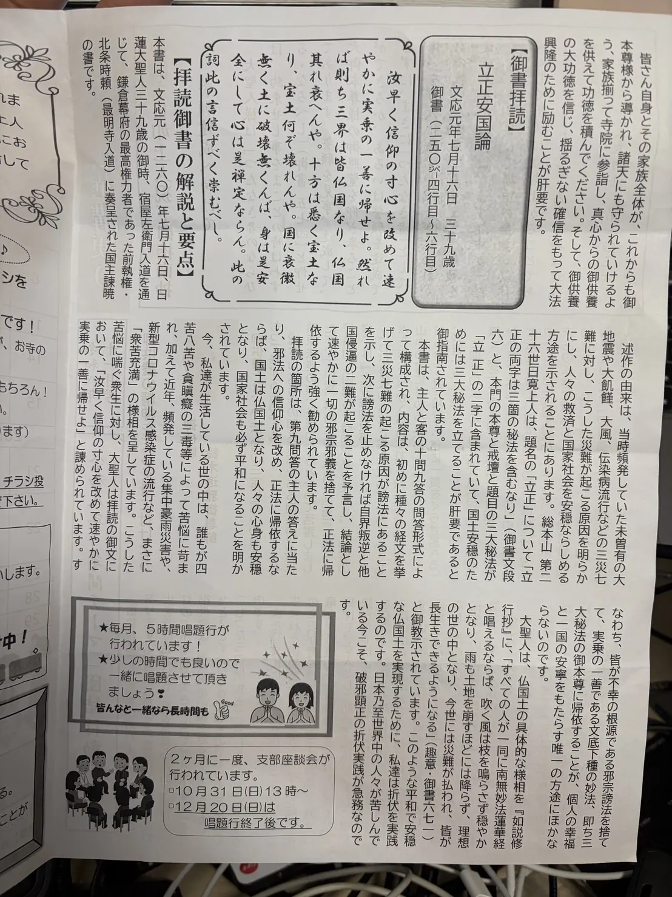

令和8年11月・法華講便り（提供資料）
非公開の確認用ページです。 2026年10月31日に提供された紙面写真4枚をもとにした作業資料です。原本全文照合・御住職の執筆範囲確認・掲載許可は未完了です。記載された11月の予定は2026年当時の資料上の予定であり、開催実績や現在の予定を保証しません。公開・配布しないでください。
今月の主な見出し
- 「妙本寺法華講便り」令和八年十一月号
- 御法主日如上人猊下御指南抄「誓願達成へ向けて」
- 御住職 鈴木道雅御尊師「御供養の精神を正しく身に付けよう」
- 令和八年 年間テーマ「団結行動の年」
- 目師会・法話会・支部総登山のお知らせ
- 「御書拝読」立正安国論、「拝読御書の解説と要点」
上記は紙面の見出しの整理であり、各文章の全文転記・著者範囲確認を完了したものではありません。
2026年11月度行事予定表（紙面の暫定転記）
誤読を避けるため、公開前に担当者が原紙と照合してください。参加方法・費用・開催可否は未確認です。
| 日付 | 紙面に記載された予定 |
|---|---|
| 1日(日) | 9:00 広布唱題会／13:00 永代経／14:30 部長会 |
| 7日(土) | 11:00 唱題行／13:00 広布推進会（四者対象、備考：大妙寺）／13:30 寺院清掃／18:00 御逮夜御講 |
| 8日(日) | 9:30 唱題行／11:30 青少年部合同部会／13:00 御報恩御講（終了後：お塔婆供養） |
| 11日(水) | 11:00 平日活動日（60分唱題・案内配布） |
| 14日(土) | 11:00 唱題行（午後：訪問折伏）／14:30 折伏協議会 |
| 15日(日) | 9:30 唱題行／13:00 目師会・七五三祝い（終了後：役員会） |
| 20日(金)・21日(土) | 本山御大会（備考：大石寺） |
| 21日(土) | 11:00〜16:00 5時間唱題行 |
| 22日(日) | 9:30 唱題行／11:00 支部総登山説明会／13:00 法話会 |
| 25日(水) | 11:00 平日活動日（60分唱題・案内配布） |
| 28日(土) | 終日 支部総登山会（備考：大石寺） |
| 29日(日) | 9:30 唱題行（終了後：家庭訪問［播磨地区］） |
法話会の案内（紙面記載・確認待ち）
2026年11月22日（日）午後1時から。講師：妙本寺住職 鈴木道雅師。テーマ「お数珠を掛ける由来と意義について」。紙面にはDVD観賞10分、御法話60分、質疑応答30分と記載されています。現在の開催予定ではありません。
その他の紙面記載
目師会：2026年11月15日（日）午後1時から。支部総登山：同年11月28日（土）の日帰り登山として案内されています。申し込み期限や集合条件は過去の資料情報のため、現在の案内には使用しません。
紙面下部には当時の折伏誓願目標と人数、会計の振込先が記載されていますが、誤用・個人情報保護の観点からウェブ転記を控えました。
提供紙面の確認用画像（4枚）
画像は校閲用です。公開用画像として承認されていません。金融口座情報は伏せています。




原文照合と公開前確認
- 紙面4枚と各見出し・行事日付・本文の完全照合
- 御法主・御住職・その他引用の著者区分と掲載許可の確認
- 当時の予定と現在の案内の区別、個人情報・金融情報の除外
- スマートフォンでの縦書き紙面の可読性、画像の代替テキストの改善